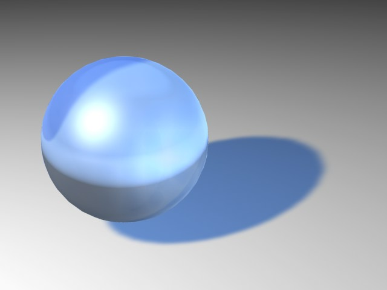
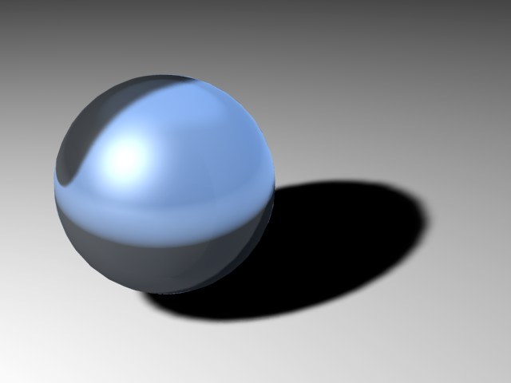
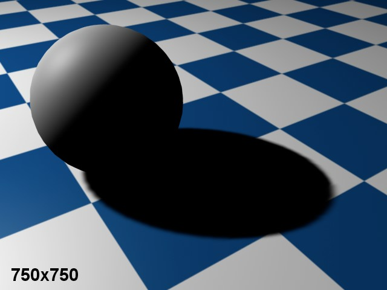

投影
你可以为不同的灯光设置不同的投影类型。例如区域光不仅可以投射区域阴影，还能投射硬阴影。
使用这个标签页的参数可以调整场景中的投影效果。
这里的投影类型菜单与常规标签页中的是对应的，功能也相同。
在真实世界中，无论是野外的树木还是房间里的花瓶，都是被多个独立的光源照亮的。这样产生的结果是光影之间的渐变过渡，这种柔和边缘（或本影），在CINEMA 4D 中可以通过阴影贴图进行模拟。阴影贴图是一张从光源视角观看的场景灰度图，其中包含了被这个光源照亮的所有物体。在渲染时，渲染器会决定哪些物体会落在这个光源的投影中。
这种投影方式的主要优点是计算速度快以及自然的软阴影边缘。
但是，软阴影的一个缺点是对内存有一定需求。根据阴影贴图的尺寸，可能会需要大量额外的内存。因此在配置阴影贴图时需要特别注意，否则你会发现场景在浪费宝贵的内存。
传统的完全光线跟踪场景的投影是硬边缘，这项技术需要计算许多额外的光线，所以会大量增加渲染时间。被称为硬阴影是因为它的边缘生硬、锐利，适合用在工程图示中。但是在其他更为自然的图片中，它看起来会相当不真实，因为这种边缘在真实环境中基本是没有的。
虽然软阴影比硬阴影要自然得多，但还是不够完美。如果仔细检查你会发现软阴影边缘的宽度都是相同的。在真实环境中这是不会发生的，阴影距离投射它的物体越近，它的边缘就会越锐利。区域阴影就能模拟这种效果。
CINEMA 4D 会在光源起点向外计算这种投影（对于所有灯光类型都是这样，无论是泛光灯、聚光灯还是区域光），只有硬阴影是在起点处计算的。区域阴影是由一个模拟多个灯光叠加的虚拟区域光源产生的，它能产生自然的光线散布效果。那么，代价是什么呢？渲染时间。细心配置区域阴影，可以产生非常真实的投影。
调节这个参数能改变阴影的密度。如果设为100%表示阴影密度是完全的，设为50%则表示阴影有一半是透明的，设为0%时阴影就消失了。你可以将密度设置超过100%。
这里可以设置阴影的颜色。因为自然环境下的投影几乎不会是纯黑的，这项设置比它看起来更有用。或者你想要让阴影呈现出物体的对比色，以此强化光与影之间的对比。
如果阴影贴图需要计算透明度和 alpha 通道，可以启用这个选项。
启用透明。 |
不启用透明。 |
如果启用这个选项，在细节标签页的修剪设置会应用到投影和照明中。
软阴影
只有选择软阴影的时候才可以使用投影贴图设置。在使用软阴影的时候，CINEMA 4D 会先从光源的起点处查看场景，然后从这个角度计算整个场景。从这个视点能看到的所有对象会被转换为投影。这个计算结果就是投影贴图。软件会给每个投影贴图分配内存。分配的内存越小，投影的像素颗粒感就越严重，其结果是产生锯齿状的边缘。投影贴图用的内存越多，投影及其边缘就越平滑。
默认情况下会使用标准的250×250分辨率。阴影贴图分辨率在需要的情况下可以设置得很大。为了让投影更加锐利和平滑，你应该提高其分辨率。如果你只是想让投影边缘保持柔和，那么可以增加采样半径，但这会增加渲染时间。
有时候，场景中有投影是由一个很远的光源产生的，球体可能会投下矩形的阴影！从光源处查看场景能纠正这种问题。像场景中的其他对象一样，灯光也可以设置为摄像机视角。你需要在编辑器中选中灯光，然后选择摄像机 | 设置活动对象为摄像机。
250x250 贴图分辨率。 |
750x750 贴图分辨率。 |
如果预设的贴图精度效果不理想，可以调整水平精度。通常水平精度（宽度）与垂直精度（高度）保持一致。
对于聚光灯，你可以提高垂直精度来避免出现方形投影。
CINEMA 4D 会自动计算阴影贴图使用的最大内存，并显示在这里。这有助于估计投影贴图需要多少内存。
这个参数决定了投影的准确性。数值越高，投影就越准确，但是需要更长地渲染时间。如果你必须使用较小的投影贴图，那么选择较高的采样半径可以提升投影质量。因此你可以用渲染时间换取内存消耗。
RELEASE 18
对于运动的灯光，可能会出现投影闪烁而且不能正确地随灯光移动的情况。这是由于固定的阴影贴图分辨率所导致的。分辨率必须降低来确保投影正确运动。当然，分辨率下降会导致边缘模糊，因此需要使用较大的采样半径进行补偿，而这也会增加渲染时间。
现在增加了增强采样半径菜单来避免需要设置过高的采样半径。这项功能会增加采样半径并随机分布采样点，它会用动画中不太显眼的噪点来替代台阶状的阴影效果。
一般来说，可以保持开启这个选项。如果不启用，投影与对象距离还取决于光源距离对象的距离——这被称为相对偏移。如果使用相对偏移，光源距离对象越远，产生的投影距离对象也越远。这种性质是从 CINEMA 4D R5版本开始的，而现在只是为了兼容旧场景而得以保留。
有时候你可能需要使用这里的偏移值调整投影的位置。对于大多数场景，1m 就足够了，不过有时候还是需要调整。
当摄像机放大非常小的物体时，物体何投影之间的距离会变得很明显（如图1）。通过降低这个参数可以修正这问题（图2）。有时可能偏移值太小——尤其是物体很大的时候——这会让投影出现在物体自身上面（图3）。如果出现这种情况，需要增大偏移值。
这项设置只用在远光或平行光中。可以将它理解成一个发光立方体，它的长度和宽度设置为平行光宽度的数值，发光立方体的深度（Z轴）是无限长的。位于这个发光立方体中的对象会产生投影。
这数值不会动态地适应场景，因为有可能在动画中其他物体会进入到投影区域。因此需要使用一个固定值，也就是在这里输入的数值。
启用这个选项会让投影渲染为一条轮廓线，而不是完整的投影。
RELEASE 18
对于泛光灯，软件内部会使用6个阴影贴图。如果使用较高的采样半径，单独的投影贴图过渡的地方会出现可见的边缘。使用这个选项会提高这些过渡处的质量（但是会增加渲染时间）。
泛光灯的一个缺点是一共需要计算6个阴影贴图，有时候这会在投影边缘处出现不自然感。如果启用投影锥体，那么产生的投影会被限制在一个锥体里面，这样只会生成一个阴影贴图，避免了不自然的边缘。还有一个优点是会提高渲染速度。使用角度可以设置投影锥体的垂直角度。
启用这个选项会让投影锥体变成软边缘。这可以让只有部分位于投影锥体区域的对象投射柔和的、渐隐的阴影。
区域阴影
一般只有在渲染时间充足的时候才会使用区域阴影。
区域阴影的形状可以非常精确地控制，因为可以使用细节标签页中的设置来调节生成区域阴影的灯光。
因此，有两种方法可以控制区域阴影：
采样精度 [0..100%]
最小取样值 [2..10000]
最大取样值 [2..10000]
区域阴影质量
采样精度、最小取样值和最大取样值这三项设置现在可以用来控制区域阴影的质量。
基本算法非常复杂，因此在这里我们我们不展开讨论。但是我们需要知道的是，渲染区域阴影需要采样，采样越多，渲染效果一致性越好（颗粒越少），同时渲染时间也更长。反之采样越少，渲染时间也就越短。
当然，你可以用可能的最大采样值来渲染场景，但是这并不合理，因为场景的部分区域只需要少量采样，而且会大量增加渲染时间。
这也就是为什么需要设置最小取样值和最大取样值。它们让你可以根据需要设置采样的多少（以及它们之间的插值）。
采样精度设置决定了采样会怎样分配（以及分配多少）来实现最佳渲染效果。在大部分关键区域，会被设置为最大取样值。
采样精度设置对关键区域的影响是最大的，因为较高的数值会使用更多采样。在非关键区域，则会使用最小取样值。
按以下步骤优化场景设置：
另外，记住这些经验法则：
示例：
在上图的上半部分中，采样精度被设为100%。正如你所看到的，渲染质量不够理想（很多颗粒）。最大取样值太低。在增加最大取样值并降低采样精度之后结果就好多了。
在下图中你能看到采样精度和最大取样值这两个重要参数的组合，包括大致的渲染时间，这些渲染时间只是作为参考。根据使用灯光效果的不同，结果也会不同。下面的这些参考有助于对渲染时间进行评估，例如将最大取样值设为2倍时。
限制
区域阴影对 PyroCluster 云无效，它们会被渲染为硬投影。